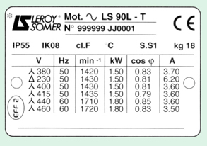

Module THÉORIE S2-T1 · 2 hSynthèse et préparation d'É1
SéquenceS2 · sem. 5-7
Nom________________
Prénom________________
Date________________
Positionnement01234
Tâches
Pas de tâche d'atelier ce jour — révision en classe entière, avant É1
Ce que je vais apprendre
Revoir la croix du frigoriste et les grandeurs U, I, R vues en S1, en équipe puis seul(e), pour arriver prêt(e) à É1
Savoir-être
Jouer le jeu du quiz honnêtement · s'entraîner seul(e) sans regarder le voisin · être honnête dans mon auto-positionnement
Compétence
Appui d'É1 — grille indicative, non remontée ce cours révise S1-T1 et S1-T2 ; l'évaluation, c'est É1, semaine 7
Accroche — à quoi ressemblera É1 ?
Dans deux semaines, en semaine 7, vous passerez votre toute première évaluation notée de l'année : É1.
Pas de piège : voici exactement à quoi elle ressemblera, sur les 3 créneaux de la semaine.
Poste
Durée
Ce qui sera demandé
FROID
4 h
Enchaîner coupe → cintrage → dudgeon sur une pièce de cuivre (comme en S1-F1/S2-F1), puis repérer les 4 organes sur une machine réelle en fonctionnement (comme en S1-F2/S2-F2).
ÉLEC
4 h
Câbler un montage domestique et mesurer U, I, R au multimètre (comme en S1-E1/E2 et S2-E1).
THÉORIE
2 h
Un écrit individuel : la croix à compléter, un organe à associer à son rôle, des calculs guidés loi d'Ohm, une lecture de plaque — exactement le format de ce cours.
É1 positionne officiellement 3 compétences : C3.4 (façonner/raccorder les circuits),
C3.6 (câbler/repérer les liaisons électriques), C4.5 (mesurer, comparer des grandeurs). Vous les
connaissez déjà : vous les avez pratiquées en S1 et vous les pratiquez encore en S2. É1 ne demande rien de
nouveau — seulement de refaire, seul(e) et dans des conditions d'examen, ce que vous savez déjà faire.
Ce qui change depuis S1 — En S1, le professeur vous a montré pas à pas (démonstration).
Aujourd'hui, c'est vous qui répondez d'abord : en équipe pendant le quiz, puis seul(e) pendant l'entraînement.
Le professeur ne reprend que ce qui coince encore. C'est exactement ce qu'on attendra de vous à É1.
Avant de commencer — Sur une échelle de 0 à 4, comment vous sentez-vous
aujourd'hui face à É1 ? (Vous répondrez à nouveau à cette question à la fin du cours, pour voir votre progression.)
La classe est répartie en équipes de 3-4. Chaque équipe choisit un nom.
4 manches courtes, une question à la fois, projetée ou lue à voix haute.
Chaque équipe écrit sa réponse sur son ardoise/feuille et la montre au signal du professeur.
1 point par bonne réponse (2 points si l'équipe est la seule à avoir trouvé). Le professeur note les
points au tableau, par équipe : aucune note individuelle n'est remontée sur École Directe.
Notez vos propres réponses ci-dessous au fur et à mesure : cette feuille vous servira à réviser ensuite.
Manche 1 — la croix du frigoriste (4 questions)
Sur la croix du frigoriste, quel organe se trouve à GAUCHE ?
Quel organe se trouve en HAUT ?
Le fluide sort du compresseur : dans quel organe entre-t-il en premier ?
Quel organe absorbe la chaleur et fait naître le froid ?
Manche 2 — vrai ou faux (4 questions)
Le condenseur transforme le liquide en gaz. (Vrai/Faux)
Le compresseur est du côté chaud de la croix. (Vrai/Faux)
Le multimètre peut mesurer la tension, l'intensité ET la résistance. (Vrai/Faux)
On peut mesurer une résistance sur un circuit resté sous tension. (Vrai/Faux)
Manche 3 — les 3 grandeurs U, I, R (4 questions)
Quelle est l'unité de la tension, et son symbole ?
Quel appareil (ou quelle position du multimètre) sert à mesurer l'intensité ?
Quelle est l'unité de la résistance, et son symbole ?
Complétez la formule de la loi d'Ohm : U = ____ × ____
Manche 4 — lecture de plaque, en éclair (2 questions)
Sur une plaque signalétique, à quoi reconnaît-on une grandeur électrique plutôt qu'une grandeur mécanique
(poids, vitesse) ?
Sur la plaque du moteur vue en S1-T2 (ligne 440 V / 60 Hz), quelle était l'intensité relevée ?
La loi d'Ohm : U = R × I (D'après : « Loi d'Ohm », F. Henninot).
Calcul guidé 1 — On a mesuré au multimètre, hors tension, la résistance
d'un enroulement de moteur : R = 7,3 Ω (TP 04 – multimètre, S1-T2). Le secteur français utilisé dans
nos ateliers est U = 230 V. En exercice de calcul seulement (formule I = U ÷ R) : quelle serait
l'intensité I ?
I = U ÷ R = ____________ ÷ ____________ = ____________
Calcul guidé 2 — Sur la plaque du moteur revue en S1-T2 (ligne 440 V /
60 Hz), on lit U = 440 V et I = 3,60 A. En appliquant la formule R = U ÷ I : quelle
valeur obtenez-vous ?
R = U ÷ I = ____________ ÷ ____________ = ____________
Exercice 4 — lecture de plaque signalétique
Même plaque qu'en S1-T2. Relisez la ligne 440 V / 60 Hz et complétez, sans
aide cette fois :

Plaque signalétique d'un moteur Leroy Somer LS 90L-T.
Grandeur (ligne 440 V)
Valeur lue
1. Intensité absorbée
2. Puissance mécanique nominale
3. Vitesse nominale
4. Poids du moteur
Question — Parmi ces 4 valeurs, laquelle (ou lesquelles) sont des
grandeurs électriques ?
É1 positionne 3 compétences. Avant correction du professeur, positionnez-vous
honnêtement, en repensant au quiz et aux exercices de ce cours.
Échelle FrigorX : 0 Non évalué · 1 Non acquis · 2 En cours
d'acquisition · 3 Acquis · 4 Parfaitement maîtrisé.
Compétence (en mes mots)
0
1
2
3
4
C3.4 — Je sais façonner et raccorder un tube de cuivre (couper, cintrer, dudgeonner) en
enchaînant les étapes Confortement
Non évalué ce jour.
Je ne sais pas enchaîner les étapes seul(e).
J'enchaîne les étapes avec de l'aide.
J'enchaîne les étapes seul(e), la pièce passe les contrôles.
Comme « Acquis », en expliquant mes choix à un camarade.
C3.6 — Je sais câbler un montage électrique domestique simple à partir d'un schéma
Confortement
Non évalué ce jour.
Je ne sais pas câbler seul(e) à partir du schéma.
Je câble avec de l'aide.
Je câble seul(e), le montage fonctionne au contrôle du professeur.
Comme « Acquis », en expliquant mes choix à un camarade.
C4.5 — Je sais mesurer une grandeur (U, I, R) avec le bon appareil et comparer ma mesure à
une valeur attendue Confortement
Non évalué ce jour.
Je ne sais pas choisir/utiliser le bon appareil.
Je mesure avec de l'aide.
Je mesure seul(e) et je compare ma valeur à ce qui est attendu.
Comme « Acquis », en expliquant ma démarche à un camarade.
Savoir-être — je joue le jeu du quiz honnêtement, je m'entraîne seul(e) sans regarder le voisin
Non observé.
Je copie ou je ne participe pas.
Je participe mais j'ai besoin d'un rappel.
Je joue le jeu honnêtement, je travaille seul(e) pendant l'entraînement.
Comme « Acquis », et j'aide une autre équipe à rester honnête.
Mon auto-positionnement global aujourd'hui :01234
Ce que je révise d'ici la semaine 7
Cochez ce qui vous semble encore fragile, à revoir seul(e) ou avec le professeur
avant É1 :
Point à réviser
Je coche si fragile
La croix : position des 4 organes + sens de circulation
☐
Le rôle de chaque organe (une phrase par organe)
☐
Les 3 grandeurs U, I, R : symboles, unités, appareils de mesure
☐
La formule de la loi d'Ohm et son maniement (I = U÷R, R = U÷I)
☐
La lecture d'une plaque signalétique (repérer les grandeurs électriques)
☐
Mes gestes cuivre (coupe, cintrage, dudgeon) — à revoir en atelier
☐
Mon câblage et mes mesures au multimètre — à revoir en atelier
☐
Retour sur la question du début — Sur une échelle de 0 à 4, comment vous
sentez-vous maintenant face à É1 ? Comparez à votre réponse de la feuille 1.
Ce cours n'est pas noté sur École Directe :
c'est votre outil personnel pour préparer É1, semaine 7 (postes froid, élec, théorie).
D'après : documents S1-T1
« Le cycle frigorifique, les bases » et S1-T2 « Les grandeurs électriques U, I, R » (F. Henninot, 2026) ;
schéma « La Croix du Frigoriste » (F. Henninot) ; plaque signalétique moteur Leroy Somer LS 90L-T et TP 04 –
multimètre + correction, résistance d'enroulement 7,3 Ω (F. Henninot) ; schéma « Loi d'Ohm » (F. Henninot) ;
format d'exercice « croix à compléter » inspiré de « eval croix du frigo » (F. Henninot, base 25-26, éléments
compresseur/détendeur/évaporateur/condenseur repris, capillaire et pressions HP/BP non repris — non vus en
S1-T1).